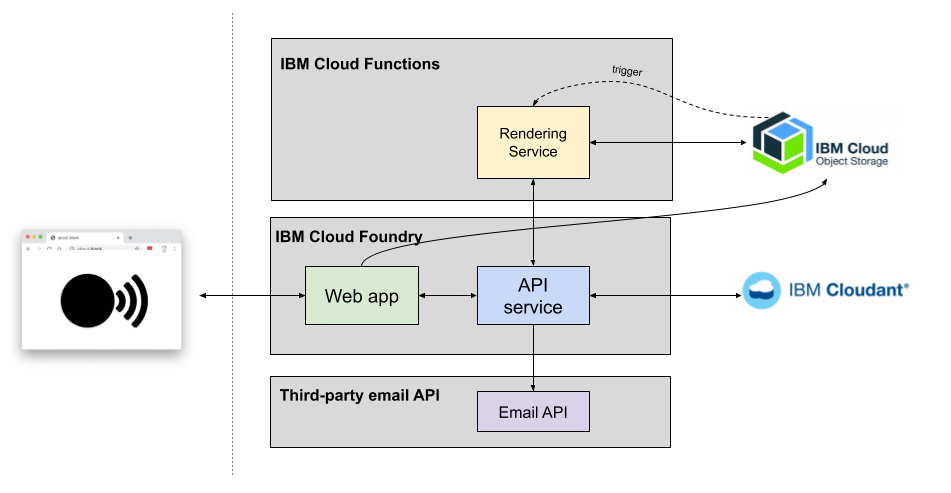

Introduction
Choirless is a musical collaboration platform built to enter Call for Code 2020.
It allows music groups to create a video wall recording of a piece of music, where all of the
individual submissions are captured separately on the performers' phone, tablet or laptop.
The core technology that powers Choirless has been released as a Call for Code with The Linux Foundation project named
Rend-o-matic.
Choirless came about during the 2020 Covid-19 Pandemic, as countries went into lockdown
and social-distancing prevented choirs, bands and other musical ensembles from meeting and
performing in person. Video meeting platforms such as Zoom and WebEx proved useless for live
collaboration because of the network latency and the audio being optimised for speech.
Choirless aims to make it very easy for choir leaders create songs made out of several parts
(e.g. alto, tenor, soprano) and to organise choir members to provide renditions of a part.
All of the contributed videos are stitched together into an video wall with no special
equipment and without employing costly and time-consuming video editing software.
Who are we?
The Choirless Crew consist of three IBMers:
How does it work?
Choirless consists of a number of microservices working together:

Choirless components
- The Application Server powers the
Choirless front-end website. It is built with HTML and vanilla JavaScript and is deployed using
Cloud Foundry in the IBM Cloud
- The Choirless API is a RESTful API service
written in Node.js which stores its state in a Cloudant JSON document store.
Rend-o-matic components
- The Renderer is a collection of Python
and Node.js serverless actions that run in the IBM Cloud Functions framework. They are triggered
by objects arriving in Cloud Object Storage and from user-driven events. Each action performs a
specific audio/video processing job, such as resizing video or creating montages of multiple
video sources.
- Boxjam is a Node.js module that fits
many rectangles into another rectangle - useful if you're creating video montages of videos
that are of various sizes and orientations.
- Stitcheroo is a Node.js module that fits
many combines multiple videos sources into an output montage. It can also process the
audio tracks for stereo spread and reverberation ambience.
The Rendering Process
The Rendering service is a mulit-step process, where each step is triggered by the arrival of an
object in a COS bucket. Some actions are taken in parallel to speed up the process:
How can I try it?
Simpy visit
Choirless.com and sign up for an account. Or, check
out the
Rend-o-matic GitHub organisation to explore the
underlying engine that powers Choirless.
Open source
All of our source code is
open-sourced under the MIT
license on GitHub.
© Choirless 2020